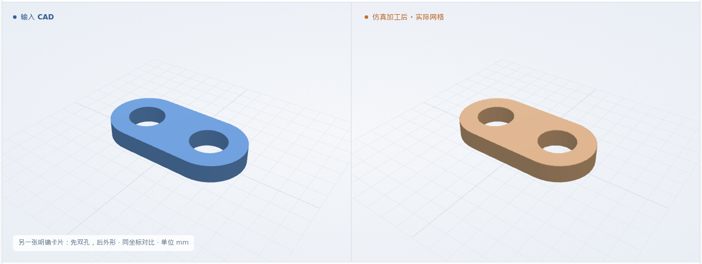
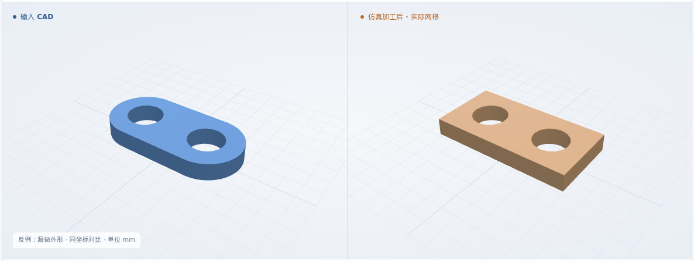
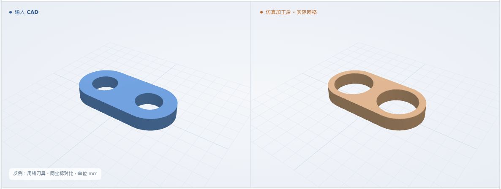

面铣 → 圆头外形 → 双孔
来料厚 1.5 → 成品厚 1 mm · 目标顶面 Z-0.5 · P1 → C1 → H1 → H2
最终网格 0.025 mm
体积 IoU99.3114%

本次新增：同一原始毛坯连续面铣 / 外形 / 铣孔 · 保持卡片工步顺序与换刀 · 各累计工步独立 CAD 与实际剩料检验
体积 IoU = 原 CAD 与实际剩料的交集 / 并集
来料厚 1.5 → 成品厚 1 mm · 目标顶面 Z-0.5 · P1 → C1 → H1 → H2
最终网格 0.025 mm
来料厚 1.5 → 成品厚 1 mm · 目标顶面 Z-0.5 · P1 → C1 → H1 → H2 → H3
最终网格 0.025 mm

来料厚 1.5 → 成品厚 1 mm · 目标顶面 Z-0.5 · P1 → C1 → H1 → H2
最终网格 0.025 mm

来料厚 1.5 → 成品厚 1 mm · 目标顶面 Z-0.5 · P1 → H2 → H1 → C1
最终网格 0.025 mm

8 / 12 × 4 × 1.5 mm 合成件 · 6061-T6 标签 · 通用 XYZ。双孔、三孔、换刀及另一种明确卡片顺序。
工艺卡 + CAD → 面铣 → 圆头外形 → 铣孔 → 最终比对
三维回放暂不可用；上方实际图片和形状下载仍可查看。
先用 T1 φ2 铣厚度与外形，再用 T2 φ1 铣两个 φ2 通孔
原卡顺序、依赖、原 CAD、来料与刀具逐项对应；缺项或冲突则停止。
准备检查通过 ↗重读原 CAD；核对覆盖范围、轮廓补偿、孔位、深度、退刀、换刀及完整工步顺序。
NC 与工艺卡一致 ↗各工步从原始来料执行累计 NC，检查厚度、外形与孔；最后与原 CAD 比较全部剩料。
实际去料与几何检查 ↗逐工步结果 · 同一原始毛坯执行累计 NC
| 工步边界 | IoU | 形状与验收 |
|---|---|---|
| P1 完成 | 99.9732% | 预期 CAD · 实际 STL 验收通过 ↗ |
| C1 完成 | 99.6413% | 预期 CAD · 实际 STL 验收通过 ↗ |
| H1 完成 | 99.4807% | 预期 CAD · 实际 STL 验收通过 ↗ |
最终与工步边界网格均为 0.025 mm；软件允许量 0.1 mm，数值保护带 0.05 mm。25 个保留面点、11 个截面、每孔 9 条贯穿线、20 条外侧清料线。
软件条件 ↗ · 完整结果 ↗制造验收依据仍待补齐；粗糙度、真实装夹和材料物理尚未验证。
四例均被正常 NC 入口拒绝，再由专用测试入口实际去料。错顺序仍可能得到相同最终几何，因此另验卡片顺序。
只修改 NC；与对应正常例的原 CAD 比较 · 几何与工序均检出异常
最终网格 0.025 mm

只修改 NC；与对应正常例的原 CAD 比较 · 几何与工序均检出异常
最终网格 0.025 mm

只修改 NC；与对应正常例的原 CAD 比较 · 几何与工序均检出异常
最终网格 0.025 mm

只修改 NC；与对应正常例的原 CAD 比较 · 几何通过，工序拒绝
最终网格 0.025 mm

继续接入原尺寸卡片、夹紧和拼板；型腔组合及偏置仍在路线中。当前合成件不代表真实整卡通过。